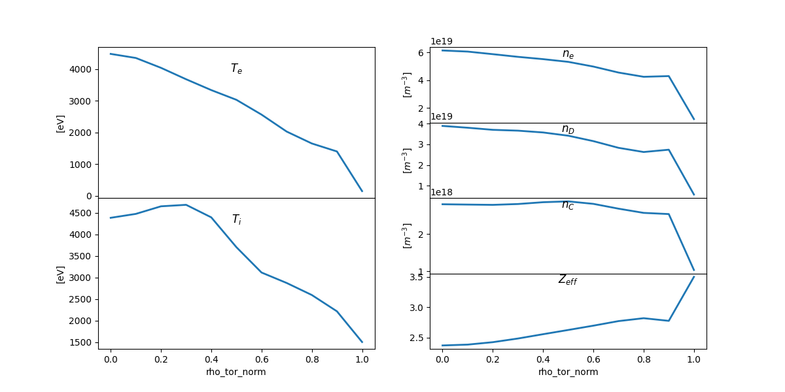

Note
Go to the end to download the full example code
Rapid plot¶
This example shows how to use the .plot_quantity() method to conveniently and rapidly plot individual ODS quantities
from matplotlib import pyplot
import os
from omas import *
ods = ODS().sample()
kw = {}
kw['lw'] = 2
fig = pyplot.figure(figsize=(12, 6))
ax = fig.add_subplot(2, 2, 1)
t = '$T_e$'
ods.plot_quantity('@core.*elec.*tem', t, **kw)
ax.set_title(t, y=0.8)
ax = fig.add_subplot(2, 2, 3, sharex=ax)
t = '$T_i$'
ods.plot_quantity('@core.*ion.0.*tem', t, **kw)
ax.set_title(t, y=0.8)
ax = fig.add_subplot(4, 2, 2, sharex=ax)
t = '$n_e$'
ods.plot_quantity('@core.*elec.*dens', t, **kw)
ax.set_title(t, y=0.8)
ax = fig.add_subplot(4, 2, 4, sharex=ax)
t = '$n_D$'
ods.plot_quantity('@core.*ion.0.*dens.*th', t, **kw)
ax.set_title(t, y=0.8)
ax = fig.add_subplot(4, 2, 6, sharex=ax)
t = '$n_C$'
ods.plot_quantity('@core.*ion.1.*dens.*th', t, **kw)
ax.set_title(t, y=0.8)
ax = fig.add_subplot(4, 2, 8, sharex=ax)
t = '$Z_{eff}$'
ods.plot_quantity('@core.*zeff', t, **kw)
ax.set_title(t, y=0.8)
fig.subplots_adjust(hspace=0)
pyplot.show()